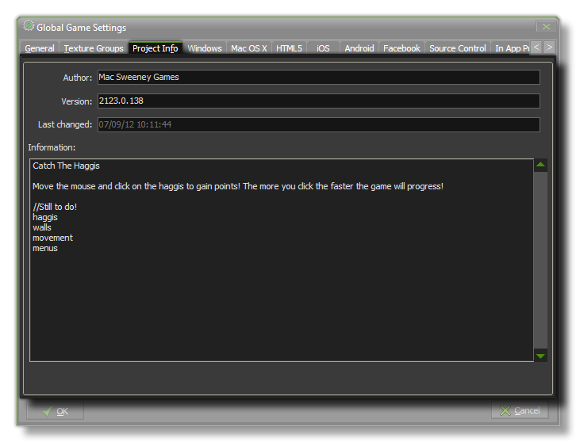

This section deals with the project info tab of the Global Games Settings Window.

This tab is simply where you can keep track of your project. You can enter details like the author name and the current version number, and there is a large area at the bottom for keeping notes or leaving
messages for other team members etc...